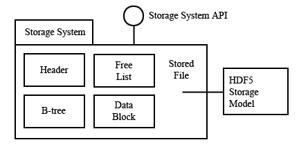
The Hierarchical Data Format (HDF) implements a model for managing and storing data. The model includes an abstract data model and an abstract storage model (the data format), and libraries to implement the abstract model and to map the storage model to different storage mechanisms. The HDF5 library provides a programming interface to a concrete implementation of the abstract models. The library also implements a model of data transfer, i.e., efficient movement of data from one stored representation to another stored representation. Figure 1 illustrates the relationships between the models and implementations. This chapter explains these models in detail.
| 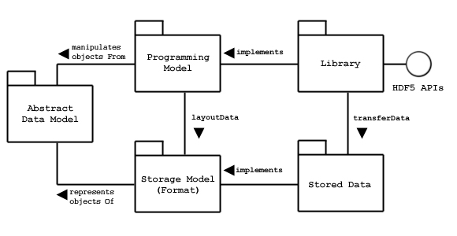 |
| Figure 1 |
The Abstract Data Model is a conceptual model of data, data types, and data organization. The Abstract Data Model is independent of storage medium or programming environment. The Storage Model is a standard representation for the objects of the Abstract Data Model. The HDF5 File Format Specification defines the Storage Model.
The Programming Model is a model of the computing environment, which includes many platforms, from small single systems to large multiprocessors and clusters. The Programming Model manipulates (instantiates, populates, and retrieves) objects from the Abstract Data Model.
The Library is the concrete implementation of the Programming Model. The Library exports the HDF5 APIs as its interface. In addition to implementing the objects of the Abstract Data Model, the Library manages data transfers from one stored form to another (e.g., read from disk to memory, write from memory to disk, etc.).
The Stored Data is the concrete implementation of the Storage Model. The Storage Model is mapped to several storage mechanisms, including single disk files, multiple files (family of files), and memory representations.
The HDF5 Library is a C module that implements the Programming Model and Abstract Data Model. The HDF5 Library calls the Operating System or other Storage Management software (e.g., the MPI/IO Library) to store and retrieve persistent data. The HDF5 Library may also link to other software, such as filters for compression. The HDF5 Library is linked to an application program, which may be written in C, C++, Fortran 90, or Java. The application program implements problem specific algorithms and data structures, and calls the HDF5 Library to store and retrieve data. Figure 2 shows the dependencies of these modules.
| Figure 2 |
It is important to realize that each of the software components manages data using models and data structures that are appropriate to the component. When data is passed between layers-during storage or retrieval-it is transformed from one representation to another. Figure 3 suggests some of the kinds of data structures used in the different layers.
The Application Program uses data structures that represent the problem and algorithms, including variables, tables, arrays, and meshes, among other data structures. Obviously, an application might have quite a few different kinds of data structures, and different numbers and sizes of objects, depending on its design and function.
The HDF5 Library implements the objects of the HDF5 Abstract Data Model. These include Groups, Datasets, and Attributes and other objects as defined in this Chapter. The Application Program maps the application data structures to a hierarchy of HDF5 objects. Each application will create a mapping best suited to its purposes.
The objects of the HDF5 Abstract Data Model are mapped to the objects of the HDF5 Storage Model, and stored in a storage medium. The stored objects include header blocks, free lists, data blocks, B-trees, and other objects. Each Group, Dataset, etc. is stored as one or more header and data blocks, organized as defined in the HDF5 File Format Specification. The HDF5 Library can also use other libraries and modules, such as compression.
|
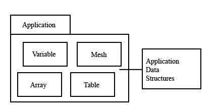 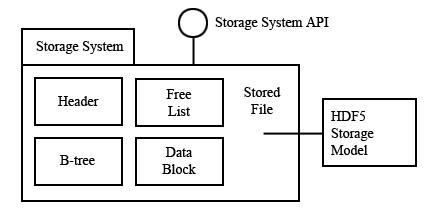 |
| Figure 3 |
The important point to note is that there is not necessarily any simple correspondence between the objects of the Application Program, the Abstract Data Model, and those of the Format Specification. The organization of the data of Application Program, and how it is mapped to the HDF5 Abstract Data Model is up to the application developer. The Application Program only needs to deal with the Library and the Abstract Data Model. Most applications need not consider any details of the HDF5 File Format Specification, or the details of how objects of Abstract Data Model are translated to and from storage.
The Abstract Data Model (ADM) defines concepts for defining and describing complex data stored in files. The HDF5 ADM is a very general model which is designed to conceptually cover many specific models of data. Many different kinds of data can be mapped to objects of the HDF5 ADM, and therefore stored and retrieved using HDF5. The ADM is not, however, a model of any particular problem or application domain. Users need to map their data to the concepts of the ADM.
The key concepts include:
Abstractly, an HDF5 File is a container for an organized collection of objects. The objects are Groups and Datasets and other objects as defined below. The objects are organized as a rooted, directed graph. Every HDF5 file has at least one object, the root group (Figure 4). All objects are members of the root group or descendents of the root group.
|
|||||
| Figure 4 |
HDF5 objects have a unique identity within a single HDF5 file, and can be accessed only by its names within the hierarchy of the file. HDF5 objects in different files do not necessarily have unique identities, and it is not possible to access a permanent HDF5 object except through a file. See the section "The Structure of an HDF5 File" below for an explanation of the structure of the HDF5 file.
When the file is created, the File Creation Properties specify settings for the file. File Creation Properties include version information and parameters of global data structures. When the file is opened, the File Access Properties specify settings for the current access to the file. File Access Properties include parameters for storage drivers and parameters for caching and garbage collection. The File Creation Properties are permanent for the life of the file, the File Access Properties can be changed by closing and reopening the file.
An HDF5 file can be "mounted" as part of another HDF5 file. This is analogous to Unix File System mounts. The root of the mounted file is attached to a Group in the mounting file, and all the contents can be accessed as if the mounted file were part of the mounting file.
An HDF5 Group is analogous to a file system directory. Abstractly, a Group contains zero or more objects, and every object must be a member of at least one Group. (The root Group is a special case; it may not be a member of any group.)
Group membership is actually implemented via Link objects (Figure 5). A Link object is owned by a Group and points to a Named Object. Each Link has a name, and each link points to exactly one object. Each Named Object has at least one and possibly many Links to it.
| 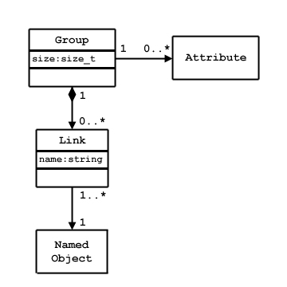 |
| Figure 5 |
There are three classes of Named Objects: Group, Dataset, and Named Datatype (Figure 6). Each of these objects is the member of at least one Group, which means there is at least one Link to it.
| 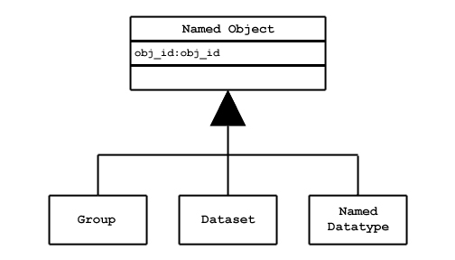 |
| Figure 6 |
An HDF5 Dataset is a multidimensional (rectangular) array of Data Elements (Figure 7). The shape of the array (number of dimensions, size of each dimension) is described by the Dataspace object (see below).
A Data Element is a single unit of data which may be a number, a character, an array of numbers or characters, or a record of heterogeneous data elements. A Data Element is a set of bits, the layout of the bits is described by the Datatype (see below).
The Dataspace and Datatype are set when the Dataset is created, they can not be changed for the life of the Dataset. The Dataset Creation Properties are set when the Dataset is created. The Dataset Creation Properties include the fill value and storage properties such as chunking and compression. These properties cannot be changed after the Dataset is created.
The Dataset object manages the storage and access to the Data. While the Data is conceptually a contiguous rectangular array, it is physically stored and transferred in different ways depending on the storage properties and the storage mechanism used. The actual storage may be a set of chunks, which may be compressed, and the access may be through different storage mechanisms and caches. The Dataset maps between the conceptual array of elements and the actual stored data.
| 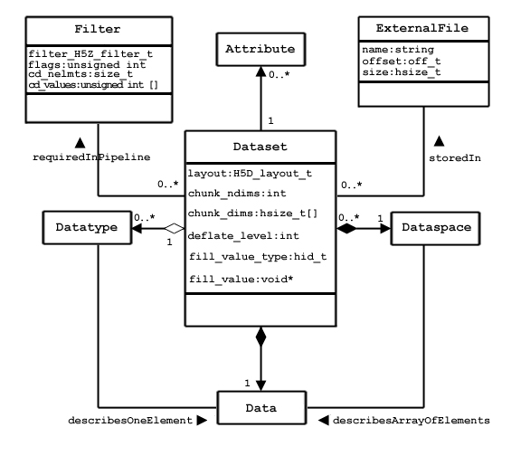 |
| Figure 7 |
The HDF5 Dataspace describes the layout of the elements of a multidimensional array. Conceptually, the array is a hyper-rectangle with one to 32 dimensions. HDF5 Dataspaces can be extendable. Therefore, each dimension has a current and maximum size, and the maximum may be unlimited. The Dataspace describes this hyper-rectangle: it is a list of dimensions, with the current and maximum (or unlimited) size (Figure 8).
|
|||
| Figure 8 |
Dataspace objects are also used to describe hyperslab selections from a dataset. Any subset of the elements of a Dastaset can be selected for read or write by specifying a set of hyperslabs. A non-rectangular region can be selected by the union of several (rectangular) Dataspaces.
The HDF5 Datatype object describes the layout of a single data element. A data element is a single element of the array; it may be a single number, a character, an array of numbers or carriers, or other data. The Datatype object describes the storage layout of this data.
Data types are categorized into 11 classes of Datatype. Each class is interpreted according to a set of rules and has a specific set of properties to describe its storage. For instance, floating point numbers have exponent position and sizes, which are interpreted according to appropriate standards for number representation. Thus, the Dataype Class tells what the element means, and the Datatype describes how it is stored.
Figure 9 shows the classification of data types. Atomic Datatypes are indivisible, each may be a single object; a number, a string, or some other objects. The Composite Datatypes are composed of multiple elements of atomic Datatypes. In addition to the standard types, users can define additional Datatypes, such as a 24-bit integer, or a 16-bit float.
A Dataset or Attribute has a single Datatype object associated with it (Figure 7). The Datatype object may be used in the definition of several objects, but by default, a copy of the Datatype object will be private to the Dataset.
Optionally, a Datatype object can be stored in the HDF5 file. The Datatype is linked into a Group, and therefore given a name. A Named Datatype can be opened and used in any way that a Datatype object can be used.
The details of Datatypes, their properties, and how they are used are explained in the datatypes chapter, "HDF5 Datatypes."
| 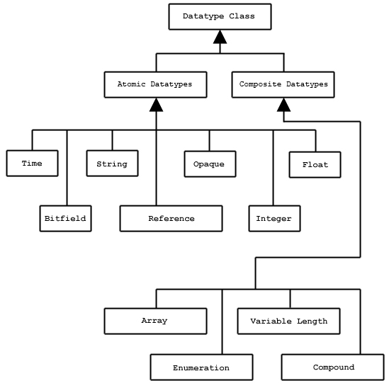 |
| Figure 9 |
Any HDF5 Named Data Object (Group, Dataset, or Named Datatype) may have zero or more user defined Attributes. Attributes are used to document the object. The Attributes of an object are stored with the object. An HDF5 Attribute has a name and data. The data is described analogously to the Dataset: the Dataspace defines the layout of an array of Data Elements, and the Datatype defines the storage layout and interpretation of the elements (Figure 10).
| 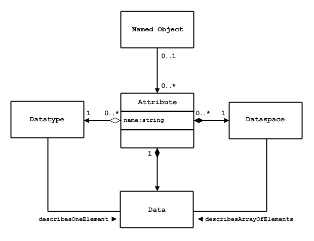 |
| Figure 10 |
In fact, a Attribute is very similar to a Dataset with the following limitations:
The name, Dataspace and Datatype of the Attribute are specified when it is created, and can not be changed over the life of the Attribute. The Attribute can be opened by name, by index, or by iterating through all the attributes of the object.
HDF5 has a generic Property List object, which is a collection of (name, value) pairs. Each class of Property List has a specific set of Properties. Each Property has an implicit name, an HDF5 Datatype, and a value (Figure 11). A Property List object is created and used similar to the other objects of the HDF5 library.
Property Lists are attached to the object in the library, they can be used by any part of the library. Some properties are permanent (e.g., the chunking strategy for a dataset), others are transient (e.g., buffer sizes for data transfer). A common use of a Property List is to pass parameters from the calling program to a VFL driver or a module of the pipeline.
Property Lists are conceptually similar to Attributes. Property Lists are information relevant to the behavior of the library, while Attributes are relevant to the user's data and application.
|
|||||||||
| Figure 11 |
Properties are used to control optional behavior for file creation, file access, dataset creation, dataset transfer (read, write), and file mounting (Table 1). Details of the different Property Lists are explained in the relevant sections of this document.
Table 1. |
||
|
Property List Class |
Used |
Examples |
| H5P_FILE_CREATE |
Properties for file creation. |
Set size of user block. |
| H5P_FILE_ACCESS |
Properties for file access. |
Set parameters for VFL driver, e.g., MPI I/O |
| H5P_DATASET_CREATE |
Properties for dataset creation. |
Set chunking, compression, fill value. |
| H5P_DATASET_XFER |
Properties for raw data transfer (i.e., read and write). |
Tune buffer sizes, memory management. |
| H5P_MOUNT |
Properties for file mounting. |
|
The HDF5 Format Specification defines how the HDF5 objects and data are mapped to a linear address space. The address space is assumed to be a contiguous array of bytes, stored on some random access medium.1 The HDF5 Format defines the standard for how the objects of the HDF5 Abstract Data Model are mapped to the linear addresses. The stored representation is self-describing in the sense that the Format defines all the information necessary to read and reconstruct the original objects of the ADM.
The HDF5 Format Specification is organized in three parts:
The Level 0 specification defines the header block for the file, which has a signature, version information, key parameters of the file layout (such as which VFL file drivers are needed) and pointers to the rest of the file. Level 1 defines the data structures used throughout the file: the B-trees, heaps, and groups. Level 2 defines the data structure for storing the data objects and data. In all cases, the data structures are completely specified so that every bit in the file can be faithfully interpreted.
It is important to realize that the structures defined in the HDF5 File Format are not the same as the Abstract Data Model: the object headers, heaps, and B-trees of the HDF5 File Specification are not represented in the Abstract Data Model. The HDF5 Format defines a number of objects for managing the storage, including header blocks, B-trees, and heaps. The HDF5 Format Specification defines how the Abstract objects (Groups, Datasets, etc.) are represented as headers, B-tree blocks, etc..
The HDF5 Library implements operations to write HDF5 objects to the linear format and to read from the linear format to create HDF5 objects. It is important to realize that a single HDF5 object, such as a Dataset, is usually stored as several objects (a header, one or more blocks for data, etc.), which may well not be contiguous on disk.
The HDF5 Format defines an abstract linear address space. This can be implemented in different storage media, such as a single file, multiple files, or memory. The HDF5 Library defines an open interface, called the Virtual File Layer (VFL), that allows different concrete storage models to be selected.
The Virtual File Layer defines an abstract model and API for random access storage, and an API to plug in alternative VFL driver modules. The model defines the operations that the VFL driver must and may support, and the plug-in API enables the HDF5 Library to recognize the driver and pass it control and data.
The HDF5 Library defines six VFL drivers: serial unbuffered, serial buffered, memory, MPI/IO, family of files, and split files (Figure 12, Table 2). Other drivers may also be available, such as a socket stream driver or Globus driver, and new drivers can be added.
| 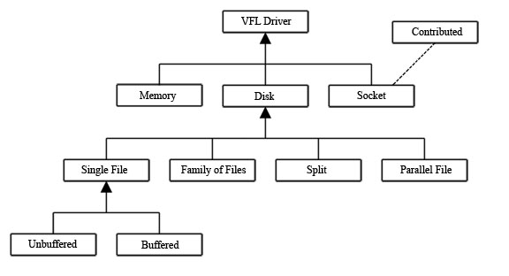 |
| Figure 12. Conceptual hierarchy of VFL drivers. |
Each driver isolates the details of reading and writing storage, so the rest of the HDF5 Library and user program can be almost the same for different storage methods. The exception to this rule is that some VFL drivers need information from the calling application, passed using property lists. For example, the MPI/IO driver requires certain control information that must be provided by the application.
Table 2 |
|
|
Driver |
Description |
| Unbuffered Posix I/O (H5FD_SEC2) |
Uses Posix file-system functions like read and write to perform I/O to a single file. |
| Buffered single file (H5FD_STDIO) |
This driver uses functions from the Unix/Posix `stdio.h' to perform buffered I/O to a single file. |
| Memory (H5FD_CORE) |
This driver performs I/O directly to memory. The I/O is memory to memory operations, but the 'file' is not persistent. |
| MPI/IO (H5FD_MPIIO ) |
This driver implements parallel file IO using MPI and MPI-IO |
| Family of files (H5FD_FAMILY) |
The address space is partitioned into pieces and sent to separate storage locations using an underlying driver of the user's choice. |
| Split File (H5FD_SPLIT ) |
The format address space is split into meta data and raw data and each is mapped onto separate storage using underlying drivers of the user's choice. |
| Stream |
This driver reads and writes the bytes to a Unix style socket, which can be a network channel. This is an example of a user defined VFL driver. |
Table 3 |
|
|
Prefix |
Object |
| H5A |
Attribute object |
| H5D |
Dataset object |
| H5E |
Error report object |
| H5F |
File object |
| H5G |
Group object |
| H5I |
Identifier object |
| H5P |
Property List Object |
| H5R |
Reference Object |
| H5S |
Dataspace Object |
| H5T |
Datatype Object |
| H5Z |
Compression Object |
The HDF5 Library implements the HDF5 Data Model and Storage Model as described above. In order to be as portable as possible, the library is implemented in portable C, which is not an object-oriented language. The HDF5 Library uses several mechanisms and conventions to implement an object model using C.
First, the HDF5 library implements the objects as data structures. In order to refer to an object, HDF5 library implements its own pointers, which are called handles or identifiers. A handle is used to invoke operations on a specific instance of an object. For example, when a Group is opened the API returns an hid_t. This object is an HDF Identifier Type, which is a reference to the specific Group. The hid_t is used to invoke operations on that Group. The hid_t is valid only within the context it is created, and remains valid until it is closed or the file is closed.
This mechanism is essentially the same as C++ or other object-oriented languages use to refer to objects, except the syntax is C.
Similarly, object-oriented languages collect all the methods for an object in a single name space, e.g., the methods of a C++ Class. The C language does not have any such mechanism, but this is a simulated the naming scheme in the HDF 5 library API. The operations on a particular class of objects are given names that began with the same prefix. Table 3 shows the HDF5 objects and the standard prefix used by the C API. For example, all the operations on a data type object are subroutines and to the names of all began with 'H5D'.
This programming model shows how to create a file and also how to close the file.
Figure 13 shows a code fragment to illustrate these steps. If there is a possibility that the file already exists, the user must add the flag H5ACC_TRUNC to the access mode to overwrite the previous file's information.
|
| Figure 13 |
The Datatype and dimensionality (dataspace) are independent objects, which are created separately from any dataset that they might be attached to. Because of this the creation of a dataset requires, at a minimum, separate definitions of datatype, dimensionality, and dataset. Hence, to create a dataset the following steps need to be taken:
The code in Figure 14 illustrates the creation of these three components of a dataset object.
|
| Figure 14 |
The datatype, dataspace and dataset objects should be released once they are no longer needed by a program. Since each is an independent object, the must be released (or closed) separately. The code in Figure 15 closes the datatype, dataspace, and datasets that were created in the preceding section.
|
| Figure 15 |
Having defined the datatype, dataset, and dataspace parameters, you write out the data with a call to H5Dwrite. F16 shows an example of how to write to a dataset.
|
| Figure 16 |
The third and fourth parameters of H5Dwrite in the example describe the dataspaces in memory and in the file, respectively. They are set to the value H5S_ALL to indicate that an entire dataset is to be written. In a later section we look at how we would access a portion of a dataset.
Reading is analogous to writing. If, in the previous example, we wish to read an entire dataset, we would use the same basic calls with the same parameters. Of course, the routine H5Dread would replace H5Dwrite.
Although reading is analogous to writing, it is often necessary to query a file to obtain information about a dataset. For instance, we often need to know about the datatype associated with a dataset, as well dataspace information (e.g. rank and dimensions). There are several "get" routines for obtaining this information. The code segment in Figure 17 illustrates how to retrieve this kind of information.
|
| Figure 17 |
In the previous discussion, we describe how to access an entire dataset with one write (or read) operation. HDF5 also supports access to portions (or selections) of a dataset in one read/write operation. Currently selections are limited to hyperslabs, their unions, and the lists of independent points. Both types of selection will be discussed in the following sections. Several sample cases of selection reading/writing are shown in Figure 18.
File dataspace
|
Memory dataspace
|
|
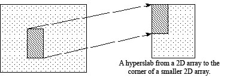 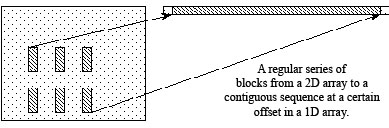 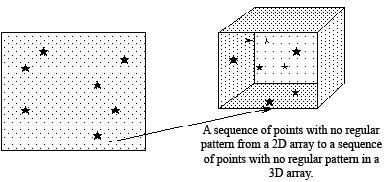 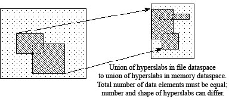 |
|
| Figure 18: Mappings between file dataspaces and selections and memory dataspaces and selections | |
Hyperslabs are portions of datasets. A hyperslab selection can be a logically contiguous collection of points in a dataspace, or it can be regular pattern of points or blocks in a dataspace. Four parameters are required to describe a completely general hyperslab. Each parameter is an array whose rank is the same as that of the dataspace. The parameters are shown in Table 4.
Table 4 |
|
|
Parameter |
Definition |
| start |
A starting location in the array. for the hyperslab. |
| stride |
The number of elements to separate each element or block to be selected. If the stride parameter is set to NULL, the stride size defaults to 1 in each dimension (i.e., no elements are skipped). |
| count |
The number of elements or blocks to select along each dimension. |
| block |
The size of the block selected from the dataspace. If the block parameter is set to NULL, the block size defaults to a single element in each dimension, as if the block array was set to all 1s. |
Suppose we want to read a 3x4 hyperslab from a dataset in a file beginning at the element <1,2> in the dataset. In order to do this, we must create a dataspace that describes the overall rank and dimensions of the dataset in the file, as well as the position and size of the hyperslab that we are extracting from that dataset. The code in Figure 19 illustrates the selection of the hyperslab in the file dataspace.
|
| Figure 19 |
This describes the dataspace from which we wish to read. We need to define the dataspace in memory analogously. Suppose, for instance, that we have in memory a 3 dimensional 7x7x3 array into which we wish to read the 3x4 hyperslab described above beginning at the element <3,0,0>. Since the in-memory dataspace has three dimensions, we have to describe the hyperslab as an array with three dimensions, with the last dimension being 1: <3,4,1>.
Notice that we must describe two things: the dimensions of the in-memory array, and the size and position of the hyperslab that we wish to read in. Figure 20 illustrates how this would be done.
|
| Figure 20 |
The hyperslab in Figure 20 has the following parameters: start=(0,1), stride=(4,3), count=(2,4), block=(3,2).
Suppose that the source dataspace in memory is this 50-element one dimensional array called vector, as in Figure 21. The code in F22 will write 48 elements from vector to our file dataset, starting with the second element in vector.
| |||||||||
| Figure 21 |
|
| Figure 22 |
A compound datatype is similar to a struct in C or a common block in Fortran. It is a collection of one or more atomic types or small arrays of such types. To create and use a compound datatype you need to create a Datatype with class "compound", and define the total size of the data element, in bytes. A Compound Datatype consists of zero2 or more members (defined in any order) with unique names and which occupy non-overlapping regions within the datum. Table 5 lists the properties of a member of a Compound Datatype.
Table 5 |
|
|
Parameter |
Definition |
| Index number |
An index number between zero and N-1, where N is the number of members in the compound. The elements are in the order of their location in the array of bytes. |
| name |
A String that must be unique within the members of the same datatype. |
| datatype |
An HDF5 Datatype. |
| offset |
A fixed byte offset, which is the first byte (smallest byte address) of that member in a compound datatype. |
Properties of members of a compound datatype are defined when the member is added to the compound type and cannot be subsequently modified.
Compound datatypes must be built out of other datatypes. First, one creates an empty compound datatype and specifies its total size. Then members are added to the compound datatype in any order.
Each member must have a descriptive name, which is the key used to uniquely identify the member within the compound datatype. A member name in an HDF5 datatype does not necessarily have to be the same as the name of the corresponding member in the C struct in memory, although this is often the case. Nor does one need to define all members of the C struct in the HDF5 compound datatype (or vice versa).
Usually a C struct will be defined to hold a data point in memory, and the offsets of the members in memory will be the offsets of the struct members from the beginning of an instance of the struct. The library defines the macro to compute the offset of a member within a struct:
HOFFSET(s,m)
This macro computes the offset of member m within a struct variable s.
Figure 23 shows an example in which a compound datatype is created to describe complex numbers whose type is defined by the complex_t struct.
|
| Figure 23 |
An extendible dataset is one whose dimensions can grow. In HDF5, it is possible to define a dataset to have certain initial dimensions, then later to increase the size of any of the initial dimensions.
For example, Figure 24 shows a 3x3 HDF5 dataset (a), which is then later extended into a 10x3 dataset by adding 7 rows (b), and then further extended to a 10x5 dataset by adding two columns (c).
| |||||||||||||||||||||||||||||||||||||||||||||||||||||||||||||||||||||||||||||||||||||||||||||
| Figure 24 |
HDF 5 requires you to use chunking in order to define extendible datasets.
Chunking makes it possible to extend datasets efficiently, without having to
reorganize storage excessively.
The following operations are required in order to write
an extendible dataset:
For example, suppose we wish to create a dataset similar to the one shown in Figure 24. We want to start with a 3x3 dataset, then later extend it in both directions.
Declaring unlimited dimensions. We could declare the dataspace to have unlimited dimensions with the following code, which uses the predefined constant H5S_UNLIMITED to specify unlimited dimensions.
|
| Figure 25 |
Enabling chunking. We can then set the dataset storage layout properties to enable chunking. We do this using the routine H5Pset_chunk:
|
| Figure 26 |
Then create a dataset.
|
| Figure 27 |
Extending dataset size. Finally, when we want to extend the size of the dataset, we invoke H5Dextend to extend the size of the dataset. In the following example, we extend the dataset along the first dimension, by seven rows, so that the new dimensions are <10,3>:
|
| Figure 28 |
Groups provide a mechanism for organizing meaningful and extendible sets of datasets within an HDF5 file. The H5G API contains routines for working with groups.
To create a group, use H5Gcreate. For example, the following code creates a group called Data in the root group.
|
| Figure 29 |
A group may be created in another group by providing the absolute name of the group to the H5Gcreate function or by specifying its location. For example, to create the group Data_new in the Data group, one can use the following sequence of calls:
|
| Figure 30 |
Note that the group identifier grp is used as the first parameter in the H5Gcreate function when the relative name is provided.
The third parameter in H5Gcreate optionally specifies how much file space to reserve to store the names that will appear in this group. If a non-positive value is supplied, then a default size is chosen.
H5Gclose closes the group and releases the group identifier.
Creating a dataset in a particular group. As with groups, a dataset can be created in a particular group by specifying its absolute name as illustrated in the following example:
|
| Figure 31 |
A relative dataset name may also be used when a dataset is created. First obtain the identifier of the group in which the dataset is to be created. Then create the dataset with H5Dcreate as illustrated in the following example:
|
| Figure 32 |
Accessing an object in a group. Any object in a group can be accessed by its absolute or relative name. The following lines of code show how to use the absolute name to access the dataset Compressed_Data in the group Data created in the examples above:
|
| Figure 33 |
The same dataset can be accessed in another manner. First access the group to which the dataset belongs, then open the dataset.
|
| Figure 34 |
Think of an attribute as a small datasets that is attached to a normal dataset or group. The H5A API contains routines for working with attributes. Since attributes share many of the characteristics of datasets, the programming model for working with attributes is analogous in many ways to the model for working with datasets. The primary differences are that an attribute must be attached to a dataset or a group, and subsetting operations cannot be performed on attributes.
To create an attribute belonging to a particular dataset or group, first create a dataspace for the attribute with the call to H5Screate, then create the attribute using H5Acreate. For example, the following code creates an attribute called Integer_attribute that is a member of a dataset whose identifier is dataset. The attribute identifier is attr2. H5Awrite then sets the value of the attribute of that of the integer variable point. H5Aclose then releases the attribute identifier.
|
| Figure 35 |
To read a scalar attribute whose name and datatype are known, first open the attribute using H5Aopen_name, then use H5Aread to get its value. For example the following reads a scalar attribute called Integer_attribute whose datatype is a native integer, and whose parent dataset has the identifier dataset.
|
| Figure 36 |
Reading an attribute whose characteristics are not known. It may be necessary to query a file to obtain information about an attribute, namely its name, datatype, rank and dimensions. The following code opens an attribute by its index value using H5Aopen_index, then reads in information about its datatype.
|
In practice, if the characteristics of attributes are not known, the code involved in accessing and processing the attribute can be quite complex. For this reason, HDF5 includes a function called H5Aiterate, which applies a user-supplied function to each of a set of attributes. The user-supplied function can contain the code that interprets, accesses and processes each attribute.
The HDF5 Library implements data transfers between different storage locations. At the lowest levels, the HDF5 Library reads and writes blocks of bytes to and from storage using calls to the VFL drivers. In addition to this, the HDF5 Library manages caches of metadata, and a data I/O pipeline that applies compression to data blocks, transforms data elements, and implements selections.
For a given I/O requests, different combinations of actions may be performed by the pipeline. The HDF5 library automatically sets up the pipeline and passes the data through the processing steps. For example, for a read request (from disk to memory), the library must determine which logical blocks contain the requested data elements and fetch each block into the library's cache. If the data needs to be decompressed, then the compression algorithm is applied to the block after it is read from disk. If the data is a selection, the selected elements are extracted from the data block after it is decompressed. If the data needs to be transformed (e.g., byte swapped), then the data elements are transformed after decompression and select. And so on.
The data pipeline is automatically constructed to optimally fulfill each I/O request. This is normally transparent to the user program, the library determines what must be done based on the metadata for the file, object, and specific request. Figure 37 shows a simplified view of a data transfer with four stages. Note that the modules are used only when needed, e.g., if the data is not compressed, the compression stage is omitted.
| 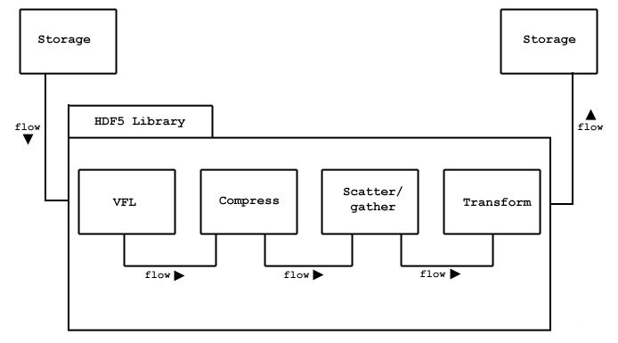 |
| Figure 37 |
In some cases it is necessary or desirable to be able to pass parameters to and from modules in the pipeline, as well as us other parts of the library that are not directly called through the programming API. This is done by using HDF5 Property List objects. A Property List is basically a list of names and values that are passed to the library and may be read by any part of the library that is interested in those properties.
Property lists are used by many parts of the library, for instance to set the read/write properties of a file, or to set up or query parameters of MPI/IO in parallel HDF5.
Some of the stages of the pipe-line have interfaces that enable users
or applications to install custom modules. For example, a new compression
algorithm can be used with the HDF 5 library by linking an appropriate
module into the pipeline. This requires creating a wrapper for the
compression module that conforms to the H5Z API.
Filters are registered with the library with H5Zregister,
and applied to a dataset with the H5Pset_filter call.
An HDF5 file is organized as a rooted, directed graph. The Named Data Objects are the nodes of the graph, and the links are the directed arcs. Each arc of the graph has a name, the root group has the name "/". Objects are created and then inserted into the graph with the link operation, which creates a named link from a Group to the object. For example, Figure 38 illustrates the structure of an HDF5 file when one dataset is created. An object can be the target of more than one link.
|
a) Newly created file: one group, /b) Create a dataset called /dset1( HDcreate(..., "/dset2", ...)
|
| Figure 38 |
The names on the links must be unique within each Group, but there may be many links with the same name in different groups. These are unambiguous, because some ancestor must have a different name, or else they are the same object. The graph is navigated with path names, analogous to Unix file systems. An object can be opened with a full path starting at the root group, or with a relative path and a starting node (Group). Note that all paths are relative to a single HDF5 File. In this sense, an HDF5 File is analogous to a single Unix File System. 3
It is important to note that, just like the Unix file system, the Objects do not have names, the names are associated with paths. An object has a unique (within the file) object id, but a single object can have many names because there are many paths to the same object. An object can be renamed (moved to another Group) by adding and deleting links. In this case, the object itself never moves. For that matter, membership in a Group has no implication for the physical location of the stored object.
Deleting a link to an object does not necessarily delete the object. The object remains available as long as there is at least one link to it. After all links to an object are deleted, it can no longer be opened, although the storage may or may not be reclaimed. 4
It is important to realize that the linking mechanism can be used to construct very complex graphs of objects. For example, it is possible for object to be shared between several groups and even to have more than one name in the same group. It is also possible for a group to be a member of itself, or create other "cycles" in the graph, such as a case where a child is the parent of one of its own ancestors.
HDF5 also has Soft Links similar to Unix soft links. A Soft Link is an object that contains a name and a path name for the target object. The Soft Link can be followed to open the target of the link, just like a regular (hard) link. Unlike hard Links, the target of a Soft Link has no count of the Soft Link to it. The reference count of an object is the number of hard Links (which must be >= 1). A second difference is that the hard link cannot be created if the target object does not exist, and always points to the same object. A Soft Link can be created with any path name, whether or not the object exists. Therefore, it may or may not be possible to follow a Soft Link, or the target object may change from one access to another access of the same Soft Link.
The structure of the file constitutes the name space for the objects in the file. A path name is a string of components separated by '/'. Each component is the name of a (hard or soft) link, or the special characters "." (meaning current group). Link names (components) can be any string of ASCII characters not containing '/' (except the string ".", which is reserved). However, users are advised to avoid the use of punctuation and non-printing characters, because they may create problems for other software. Figure 39 gives a BNF grammar for HDF5 path names.
PathName ::= AbsolutePathName | RelativePathName
Separator ::= "/" ["/"]*
AbsolutePathName ::= Separator [ RelativePathName ]
RelativePathName ::= Component [ Separator RelativePathName ]*
Component ::= "." | Name
Name ::= Character+ - {"."}
Character ::= {c: c in {{ legal ASCII characters } - {'/'}}
|
| Figure 39 |
An object can always be addressed by a full or absolute path, i.e., starting at the root group. As already noted, a given object can have more than one full path name. An object can also be addressed by a relative path, i.e., a group plus a path starting at the group.
The structure of an HDF5 file is "self-describing", in that it is possible to navigate the file to discover all the objects in the file. Basically, the structure is traversed as a graph, starting at one node, and recursively visiting the nodes of the graph.
The members of a Group can be discovered with the H5Giterate function, and a description of the object can be retrieved with the H5Gget_obj_info function. In this way, all the members of a given group can be determined, and each can be opened to retrieve a description, or the data and attributes of the object.
Figure 40 shows some examples of the structure of a file with three groups and one dataset. Figure 40a shows the structure of a file with three groups, the root with two members. Figure 40b shows a dataset created in "/group1". Figure 40c shows the structure after the dataset is linked (with H5Glink) to "/group2" with the name "dset2". Note that there is only one copy of the dataset, it has two different links to it and can be accessed by two different paths: "/group1/dset1" and "/group2/dset2".
Figure 40d shows that one of the two links to the dataset can be deleted (with H5Gunlink()). In this case, the link from "/group1" is removed. The dataset is not deleted, it is still in the file but can only be accessed as "/group1/dset2".
|
||||||||||||
| Figure 40: Examples of HDF5 file structures with groups and datasets | ||||||||||||
1HDF5 requires random access to the linear address space. For this reason it is not well suited for some data media, such as streams.
2However, a Compound Datatype with zero members can have no data, so it is useless.
3It could be said that HDF5 extends the organizing concepts of a file system to the internal structure of a single file.
4As of HDF5-1.4, the storage used for an object is reclaimed, even if all links are deleted.